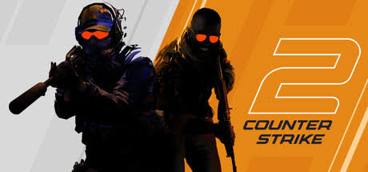
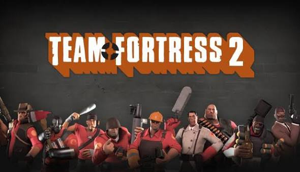
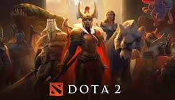
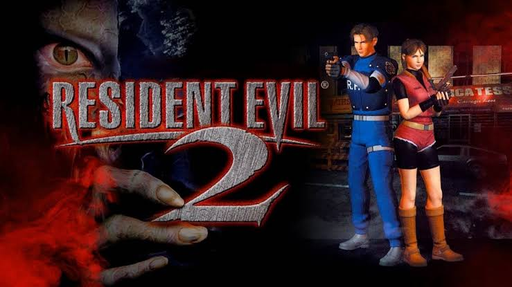
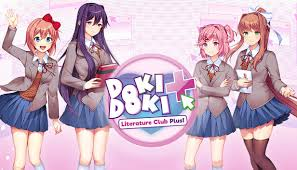

Catálogo

Counter Strike 2
Lançado em: 21/ago/2012
Há mais de duas décadas, Counter-Strike oferece uma experiência competitiva de elite. Agora, o próximo capítulo está aqui com visuais renovados e jogabilidade ainda mais intensa.

Deadlock
Lançado em: A ser anunciado
Em desenvolvimento. Jogue a beta fechada através de uma pessoa que já possui acesso à beta fechada.

Team Fortress 2
Lançamento: 10/Out/2007
Nove classes distintas oferecem uma ampla gama de habilidades táticas e personalidades. Constantemente atualizado com novos modos de jogo, mapas, equipamentos e chapéus!

Dota 2
Lançamento: 09/Jul/2013
Todos os dias, milhões de jogadores em todo o mundo entram em batalha como um dos mais de cem heróis de Dota. E não importa se é a décima ou a milésima hora de jogo, sempre há algo novo para descobrir.

Resident Evil 2
Lançamento: 29/Jan/1998
Assuma o comando de Leon S. Kennedy, um policial novato que se depara com a carnificina ao chegar para seu primeiro plantão, ou jogue como Claire Redfield, em busca desesperada de seu irmão desaparecido.

Doki Doki Literature Club Plus
Lançamento: 30/Jun/2021
Bem-vindo(a) ao clube! Escreva poemas para a pessoa por quem você tem uma queda e vivencie o terror do romance escolar nesta história de terror psicológico aclamada pela crítica.